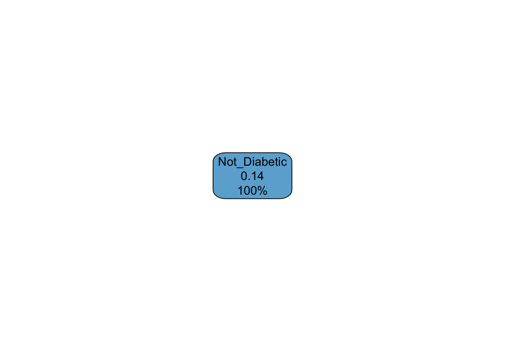

Attaching package: 'psych'
The following objects are masked from 'package:ggplot2':
%+%, alpha
The following objects are masked from 'package:scales':
alpha, rescale
Loading required package: Matrix
Attaching package: 'Matrix'
The following objects are masked from 'package:tidyr':
expand, pack, unpack
Loaded glmnet 4.1-8
Loading required package: lattice
Attaching package: 'caret'
The following objects are masked from 'package:yardstick':
precision, recall, sensitivity, specificity
The following object is masked from 'package:purrr':
lift
On this modeling page, I will utilize the same dataset explored on the EDA page to fit a Classification Tree and a Random Forest model. The data will be split into two subsets: 70% for training and 30% for testing. Additionally, I will implement 5-fold cross-validation on the training dataset. This cross-validation procedure partitions the training data into five subsets, where each subset is used as a validation set once while the remaining subsets are used for training. This approach ensures robust resampling and improves the reliability of our model evaluation.
In this section, I will train a Classification Tree model. This model predicts a binary outcome—whether an individual has diabetes—based on predictor variables such as general health, diet, exercise, gender, and health insurance. The algorithm identifies the optimal root node and leaf nodes by learning patterns within the predictor variables that map to the correct output labels. It achieves this while minimizing a loss function that quantifies prediction errors. Classification Trees are particularly advantageous because they do not rely on strict assumptions about the data, such as normality or constant variance, making them flexible for various datasets. Additionally, their structure is straightforward and easy to interpret, enhancing their utility in practical applications.
set.seed(1234)data2<-data|>select(Sex,Veggies,AnyHealthcare,GenHlth,PhysActivity)# Creating a recipe rec1<-recipe(Diabetes_binary~Sex+Veggies+AnyHealthcare+GenHlth+PhysActivity,data=train_data)|>step_dummy(Sex,Veggies,GenHlth,AnyHealthcare,PhysActivity)
#Creating a decision tree allowing for multiple depths with a minimum of 5 trees. tree_mod<-decision_tree(tree_depth =tune(),min_n =5,cost_complexity =tune() )|>set_engine("rpart")|>set_mode("classification")
#Creating the workflow that uses the model and recipe set above. tree_wkf<-workflow()|>add_recipe(rec1)|>add_model(tree_mod)
#Training the model with the cross validation data set using a log loss metric.temp<-tree_wkf|>tune_grid(resamples = cv_fold_data,metrics =metric_set(mn_log_loss)) temp|>collect_metrics()
# Here we can see the decision tree. tree_final_model %>%extract_fit_engine () %>% rpart.plot::rpart.plot(roundint=FALSE)

Random Forest Model
In this section, we will train a Random Forest model, an ensemble learning method that combines multiple randomized decision trees to produce robust predictions. The model leverages bootstrapping, a resampling technique with replacement, to generate diverse training subsets, enhancing the model’s robustness. Additionally, during tree construction, the algorithm randomly selects a subset of predictor variables for each split, reducing correlation among the trees and improving predictive accuracy. The final prediction is determined by aggregating the votes from all individual decision trees, with the majority vote dictating the predicted class label.
data2<-data|>select(Sex,Veggies,AnyHealthcare,GenHlth,PhysActivity)# Creating a recipe rec1<-recipe(Diabetes_binary~Sex+Veggies+AnyHealthcare+GenHlth+PhysActivity,data=train_data)|>step_dummy(Sex,Veggies,GenHlth,AnyHealthcare,PhysActivity)
# Creating a Random Forest Model with 100 trees. rf_spec<-rand_forest(mtry=tune(),trees =100)|>set_engine("ranger", importance ="impurity")|>set_mode("classification")
#Creating the workflow based on the recipe and model from above. rf_wkf<-workflow()|>add_recipe(rec1)|>add_model(rf_spec)
#Creating predictors that the model will use base on how many predictors my model has. mtry_vals <-grid_regular(mtry(range =c(1, ncol(data2) -1)), levels =5)
#Training the model with the cross validation data set using a log loss metric.rf_fit<-rf_wkf|>tune_grid(resamples=cv_fold_data,grid=mtry_vals,metrics=metric_set(mn_log_loss))
#Looking at the different models that have different number of predictor variables and their log loss metric. rf_fit|>collect_metrics()|>filter(.metric=="mn_log_loss")|>arrange(mean)